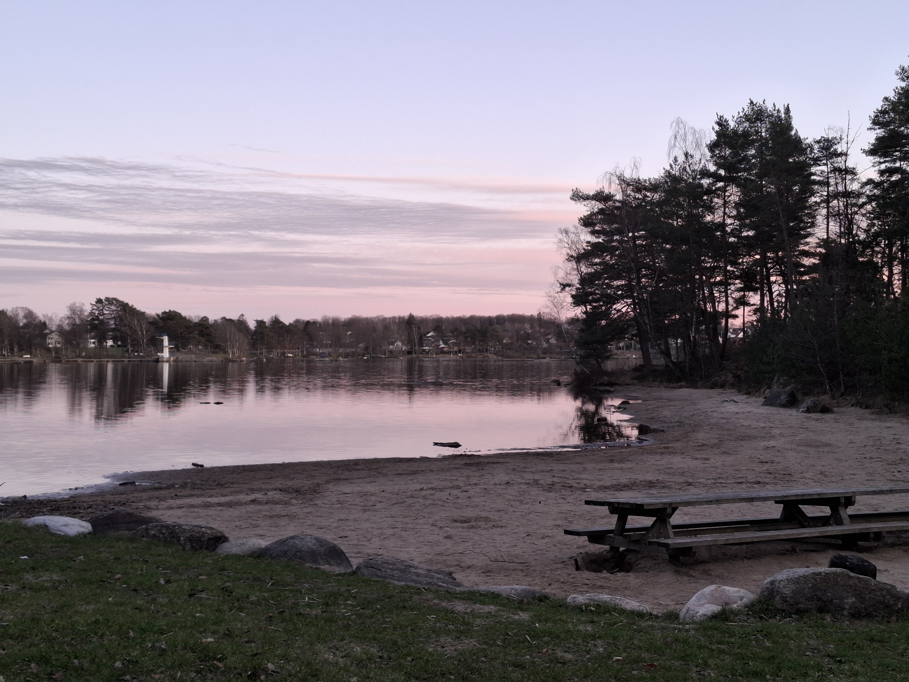

Kåsjörundan är 8km lång och tar dig runt både stora och lilla Kåsjön. Markeras med lila markeringar. Blandat med grusvägar vid bebyggelse och skogsstigar där rep är uppsatta.
Rundan kantas av rastplatser och vindskydd och går förbi Kåsjöns badplats, passa på att stanna och njuta av naturen!

Preciss intill Kåsjön ligger Åstebo med vackra skogar och spår.
Elljusspår: 2,5km lång, röd markeringar. Upplyst 05.00-23.00
Prästtjärn löpspår: 5km, gul markering. Går mellan Kåsjön och Prästtjärn.
Prästtjärn vandringsled: 7,5km, grönvit markering. Går mellan Kåsjön och Prästtjärn.